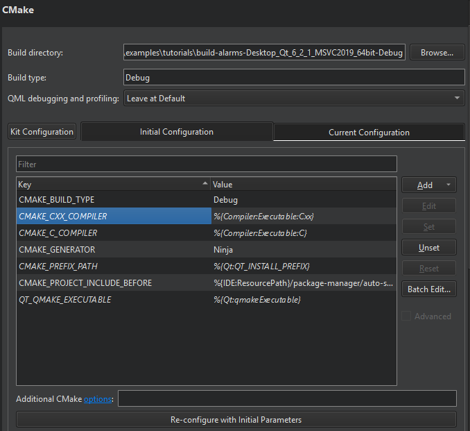
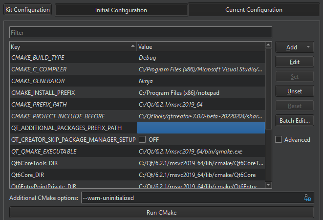
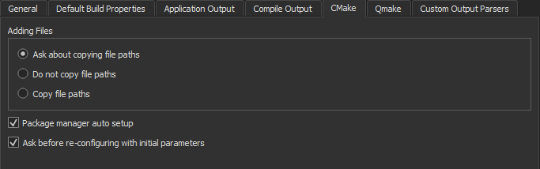
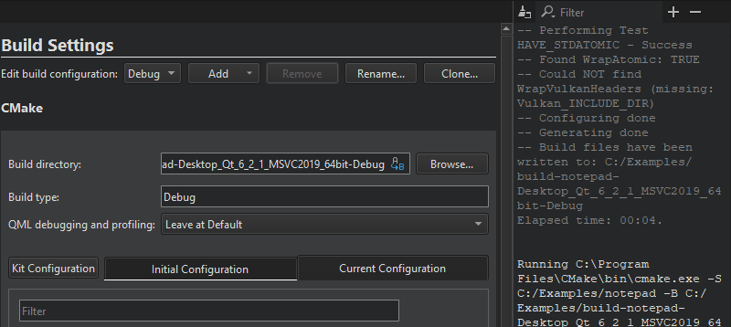
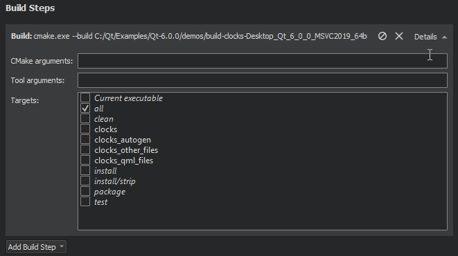
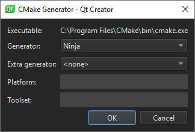
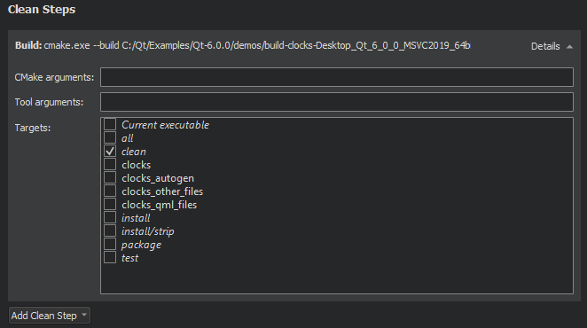

CMake Build Configuration
Configuring medium-sized to large CMake projects in Qt Creator can be a challenge due to the number of variables that you need to pass to CMake to configure the project correctly. To make this easier, Qt Creator creates an initial configuration for you based on the kit settings and displays it in Initial Configuration in the Build Settings of the project.

Initial Configuration lists the variables that are used to configure the CMake project for the first time. The default values that are inherited from the kit's CMake configuration are displayed in italic. The initial configuration list of variables is saved in the project's source directory as the CMakeLists.txt.user file.
Current Configuration lists the CMake variables in the cmake-file-api JSON export in the .cmake/api/v1/reply directory. The variables that are inherited from the initial configuration are displayed in italic. Mismatched values are displayed in red.
You can view and edit the actual values of the variables that are passed to CMake. Variable names are listed in the Key column and their current values in the Value column. For more information about the available variables, select Help in the context menu or see CMake: cmake-variables(7). For more information about Qt-specific variables, see CMake Variable Reference.
You can specify additional CMake options, such as --find-debug, --preset, --trace-expand, or --warn-uninitialized, in Additional CMake options. For more information about the available options, click the link in the field name or see CMake: cmake(1).
After successfully running CMake, you can view and modify the current configuration in Current Configuration.
Select Kit Configuration to edit the CMake settings for the build and run kit selected for the project.
Multi-Config Support
Qt Creator supports Multi-config generators, such as Xcode, Visual Studio, and Ninja Multi-Config. This means that you need to configure CMake only once, have only one build directory, and can switch between build types faster.
However, this means that Qt Creator can no longer simply parse the first CMake file-api JSON export. Therefore, the value of the Build type field must match that of the CMAKE_BUILD_TYPE variable for the single configuration generators (Ninja, Makefile) to determine, which generator to use.
When developing with Qt 6 for iOS, only the Xcode generator is supported.
Modifying Variable Values
You can view and edit the actual values of the variables that are passed to CMake in Initial Configuration or Current Configuration.

To view all variables, select the Advanced check box.
To add variables, select Add, and then select the type of the variable that you are adding: Boolean, String, Directory, or File.
To change the type of the selected variable, right-click the variable name in the Key column, and then select Force to bool, Force to file, Force to directory, or Force to string in the context menu.
To copy the name or value of the selected variable to the clipboard, select Copy in the context menu.
To modify the value of a variable, double-click it, or select it, and then select Edit. If the initial, current, and kit configuration get out of sync, select Apply Kit Value or Apply Initial Configuration Value in the context menu in Initial Configuration or Current Configuration.
You can apply actions to multiple variables at a time. To clear the selection, select Clear Selection.
To remove the selected variables, select Unset. To undo the removal, select Set.
To reset all the changes that you made, select Reset.
To modify the environment variable values for the CMake build environment, select Batch Edit. For more information, see Batch Editing.
To build using the current configuration, select Run CMake. While building, the button text changes to Stop CMake. Select the button to cancel the current build.
The variable values that you change are passed via -D<option>=<value> to CMake, which stores the options in the CMakeCache.txt file. This means that if you remove the build directory, all the custom variables that are not part of the initial CMake configuration are also removed.
To reconfigure a project using the modified variable values, select Build > Clear CMake Configuration, which removes the CMakeCache.txt file. This enables you to do a full rebuild.
Re-configuring with Initial Variables
To reset CMake variables to the initial ones, select Re-configure with Initial Variables in Initial Configuration. Qt Creator deletes the current CMake configuration and runs CMake. The initial configuration values are stored in the CMakeLists.txt.user file, so deleting a build directory does not delete the initial configuration.
To be asked before Qt Creator resets the changes, select Tools > Options > Build & Run > CMake > Ask before re-configuring with initial parameters.

Viewing CMake Output
Output from CMake is displayed next to the Build Settings and Run Settings panes in the Projects mode.

To clear the search results, select the  (Clear) button.
(Clear) button.
You can enter a string in the Filter field to filter output. To specify filtering options, select the button. You can filter output by using regular expressions or case-sensitivity. Select Show Non-matching Lines to hide the lines that match the filter.
Press Ctrl+F to search for a string from the output.
To increase or decrease the output text size, select  (Zoom In) or
(Zoom In) or  (Zoom Out), or press Ctrl++ or Ctrl+-.
(Zoom Out), or press Ctrl++ or Ctrl+-.
CMake Build Steps
Qt Creator builds CMake projects by running cmake . --build, which then runs the CMake generator specified in the project configuration: make, mingw32-make, nmake, or ninja, for example. The CMake generator produces project files for Qt Creator. Multi-config generators are also supported.
You can add arguments to pass to CMake and the generator and targets for the build command in Build Steps.

Note: While the other CMake generators are installed together with Qt, you usually need to install Ninja yourself.
Using Ninja as a CMake Generator
To use Ninja with CMake, you must install it and select it as the CMake generator in the build and run kit:
- Install Ninja.
- Add the path to the Ninja executable to the value of the PATH system variable.
- In Projects > Build & Run > Build > Build Settings, select Kit Configuration.

- Select Change next to the CMake generator field to open the CMake Generator dialog.

- In Generator, select Ninja.
- Select OK to save your changes and close the dialog.
- Select Close to close the Kit CMake Configuration dialog and return to Build Settings.
Note: To make sure that old build artifacts don't get in the way the first time you build the project after the change, select Build > Rebuild Project. This cleans up the build directory and performs a new build.
Using CMake with Conan
Qt Creator can automatically set up the Conan package manager for use with CMake.
Select Tools > Options > Build & Run > CMake > Package manager auto setup to set the value of the CMAKE_PROJECT_INCLUDE_BEFORE variable to the path to a CMake script that installs dependencies from a conanfile.txt, conanfile.py, or vcpkg.json file in the project source directory.
CMake Clean Steps
When building with CMake, you can add arguments to pass to CMake and the generator and targets for the clean command in Clean Steps.

The build errors and warnings are parsed and displayed in the Issues output pane.